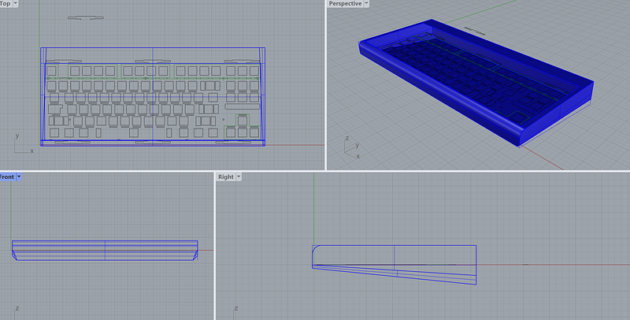
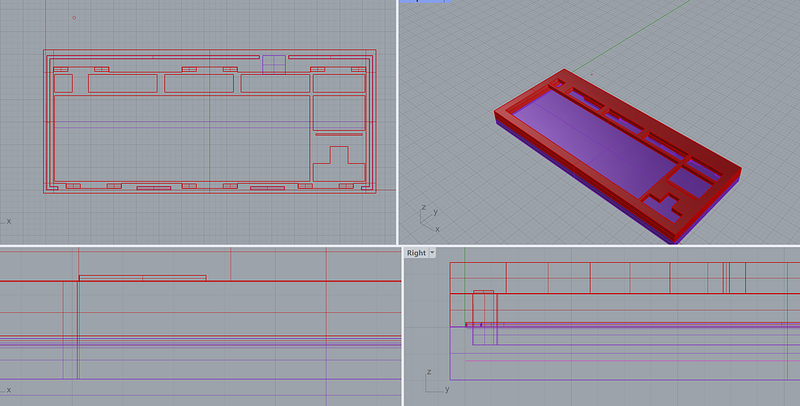
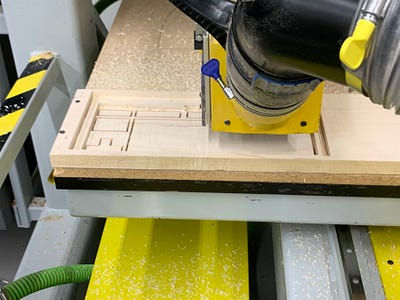
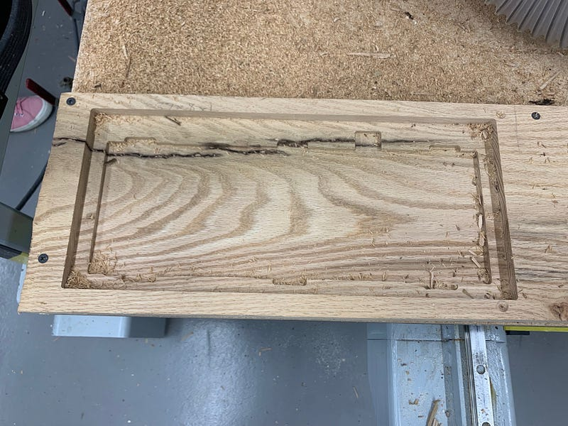
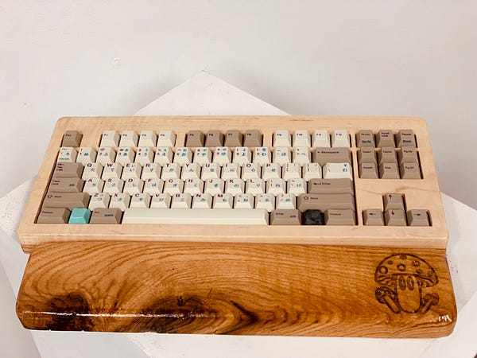

Custom Retrofuturism Keyboard
A wooden tenkeyless mechanical keyboard case designed through Rhino filework, 3D prototyping, CNC fabrication, acrylic plate mounting, assembly, sanding, finishing, and final product photography.

Concept, CAD modeling, prototype testing, CNC preparation, assembly, sanding, finishing, photography, and documentation.
Design and fabricate a custom wooden mechanical keyboard case that felt more like a finished physical product than a standard enclosure.
Soft maple, oak, acrylic plate, PCB, switches, stabilizers, PBT keycaps, magnets, lacquer, and resin accent caps.
problem
I wanted to create a custom keyboard case that felt more like a physical product than a standard off-the-shelf enclosure. The challenge was balancing aesthetics, typing feel, PCB clearance, switch tolerances, plate fit, and CNC limitations.
process
I started with a TKL layout and used an open-source plate to establish accurate dimensions. From there, I built the case around the plate in Rhino, explored chamfers and fillets, prototyped the plate, test-fit switches and keycaps, and refined the CAD before CNC cutting the case halves.
fabrication
The final build used a 1.5mm acrylic plate, gasket-style mounting, a CNC-cut soft maple top half, an oak bottom half, USB-C drilling, sanding, lacquer, epoxy-set magnets, stabilizer installation, switches, PBT Hiragana keycaps, and resin accent caps.


cnc setup
I chose soft maple for the top half of the keyboard case. Even though the name sounds misleading, soft maple is still a hardwood, which made it a good material for a clean, durable CNC cut. After preparing the file, I moved into the machining stage to see how accurately the digital model would translate into the physical form.
cutting the case
The CNC process was one of the most important moments in the project because it tested whether the file work, measurements, and small design details were actually buildable. Nearly all of the details from my model cut accurately, including the main case shape, switch area, and structural features. The only detail that did not come through as planned was a small hole intended for lights, which I decided I could live without rather than compromising the rest of the case.
test fit
Before cutting the bottom half, I test fit the PCB, plate, switches, and keycaps into the top case. This step confirmed that the most important tolerances were working and that the keyboard components fit correctly inside the wooden shell. Once the test fit looked good, I felt confident moving forward with machining the bottom half of the case.


assembly
After machining, I moved into the assembly stage: sanding the case, drilling for USB-C access, setting magnets, installing stabilizers, mounting the acrylic plate, and fitting the switches, keycaps, and PCB. This stage helped reveal how many small physical details affect the feel of a finished product.
finish
The finishing process was important because the keyboard needed to feel refined in the hand, not just technically functional. I sanded the wooden surfaces, cleaned up edges, applied lacquer, and focused on making the material contrast between the case, acrylic plate, keycaps, and resin accents feel intentional.
outcome
The final keyboard became a functional physical interface and a product design study. It brought together CAD modeling, CNC routing, woodworking, keyboard assembly, material finishing, and visual product documentation into one complete object.

what I learned
This project taught me how much product design depends on tolerance management, material behavior, assembly order, and iteration. It also helped me gain hands-on experience with woodworking, CNC routing, finishing, and physical interface design.
next iteration
If I continued the project, I would refine the lighting detail, improve the internal cable path, test alternate mounting approaches, and create a cleaner exploded diagram showing how the plate, PCB, case halves, magnets, and hardware fit together.
build log
The original Medium post documents the full process from ideation to final photos.
read full medium post →